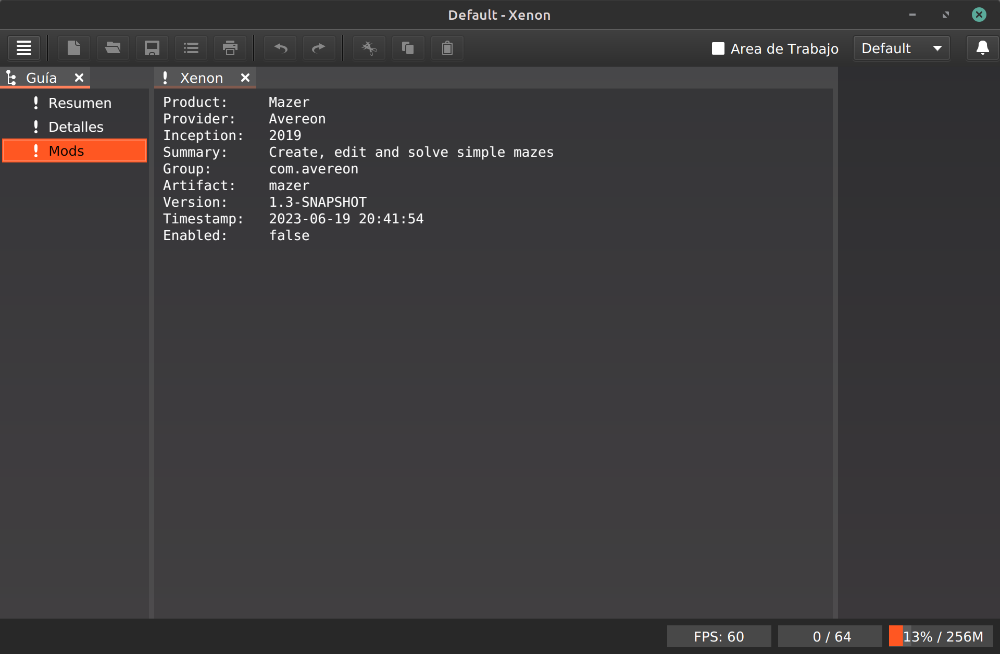

2025-06-25
This document is step-by-step instructions to create a Xenon module. These instructions attempt to be both a tutorial and a reference. If you are starting a new module project we recommend following the instructions in order. If you are returning for reference please use the index for the topic you need.
A reference project, Mazer, is also available to provide a working reference of a Xenon module. As you work through these instructions, feel free to review this project for information.
Xenon requires Java 21 or higher and usually adopts LTS Java versions as they are released. Xenon also takes advantage of the Java module system and therefore your module will also need to be a Java module.
To start a new module project we recommend that you use Maven, or a Maven compatible tool like Gradle, to configure the new module project using an existing parent pom to jump start the process. It is possible to set up a module project without using the parent pom, but you would have to handle quite a bit of configuration on your own.
Start with an empty folder for your project and create a new pom.xml file. Use the template below as the initial content for the pom.xml file and set your own groupId, artifactId and version:
<?xml version="1.0" encoding="UTF-8"?>
<project
xmlns="http://maven.apache.org/POM/4.0.0"
xmlns:xsi="http://www.w3.org/2001/XMLSchema-instance"
xsi:schemaLocation="http://maven.apache.org/POM/4.0.0 http://maven.apache.org/maven-v4_0_0.xsd"
>
<modelVersion>4.0.0</modelVersion>
<parent>
<groupId>com.avereon.pom</groupId>
<artifactId>mod</artifactId>
<version>3.6.2</version>
</parent>
<groupId>[your.group.id]</groupId>
<artifactId>[your.artifact.id]</artifactId>
<version>[your.version]</version>
<packaging>jar</packaging>
<-- The Avereon Maven repository -->
<repositories>
<repository>
<id>avn</id>
<url>https://repo.avereon.com/avn</url>
</repository>
</repositories>
</project>
At the same time you can create the source/main/java folders so that the project layout looks like the following. Note that the 'source' folder is different from the standard Maven 'src' folder. This is the only departure from the Maven Standard Directory Layout.:
pom.xml source/main/java
At this point you should be able to use Maven to run an initial build even though there isn't much to do. It will at least give you the chance to test that your configuration is correct.
Create the Java module info file source/main/java/module-info.java. This file defines the Java module requirements and will be updated from time to time as needs arise. For now, we just need the initial configuration:
module [your java module name] {
requires com.avereon.xenon;
exports [your module class package] to com.avereon.xenon;
provides com.avereon.xenon.Module with [your fully qualified module class name];
}
Here is an example using the Mazer project:
module com.avereon.mazer {
requires com.avereon.xenon;
exports com.avereon.mazer to com.avereon.xenon;
provides com.avereon.xenon.Module with com.avereon.mazer.Mazer;
}
Create your module class and extend the com.averon.xenon.Module class:
package [your package];
import com.avereon.xenon.Module;
public class [YourModuleClassName] extends Module {
}
Here is an example using the Mazer project:
package com.avereon.mazer;
import com.avereon.xenon.Module;
public class Mazer extends Module {
}
Modules use a small file, called a product card, or module card, as a descriptor.
Create a new JSON text file,
source/main/resources/META-INF/product.card, with the
following content. Values surrounded by ${...} are replaced by
Maven at build time. Values surrounded by <...> should be updated
to use your values. The remaining values, such as packaging, should be left
as defined:
{
"group": "${project.groupId}",
"artifact": "${project.artifactId}",
"version": "${project.version}",
"timestamp": "${project.timestamp}",
"packaging": "mod",
"icons": [ "${project.artifactId}", "<https://www.avereon.com/download/stable/avereon/provider/icon>" ],
"name": "${project.name}",
"provider": "${project.organization.name}",
"providerUrl": "${project.organization.url}",
"inception": "${project.inceptionYear}",
"summary": "<A program to provide capability>",
"description": "${project.description}",
"copyrightSummary": "<All rights reserved.>",
"licenseSummary": "<${project.name} comes with ABSOLUTELY NO WARRANTY.>",
"javaVersion": "21",
"maintainers": [
{
"name": "<John Doe>",
"email": "<john.doe@example.com>",
"timezone": "<time zone>",
"organization": "<Example Organization>",
"organizationUrl": "<https://example.com>",
"roles": [<"Architect", "Developer">]
}
],
"contributors": []
}
With the module card in place there is enough implementation to build the module library and eventually try it with Xenon.
To build the module, use Maven with the package goal:
mvn -U clean package
If all has gone well there is now a jar file (not the sources or javadoc jar) in the target folder. This file is your module library.
Online deployment is the recommended method to deploy modules. This allows users to install your module and stay up-to-date using the built-in online update features of Xenon. While this method requires a bit more effort to configure initially, it provides a much better experience for your users and fits modern software development practices.
Online deployment requires the use of a simple artifact repository (also called a product market). Only one version of an artifact is allowed in a repository, so it is common to have multiple repositories for different stages of module development. It is recommended to have at least a 'stable' (production quality) repository and a 'latest' (development quality) repository.
To deploy a module to a repository both the module library (also called a product pack) and the module card (also called a product card) must be made available in the repository location for the module. Xenon uses the module card to determine if the module needs to be updated on user installations so be sure the module card information is updated along with the module library. Using Maven to build your module will also create an updated module card.
Once the module is deployed to a repository, add that repository to the Xenon Product Markets in the Product tool, if not already added. Once the repository is added to the Product Markets, select Available Products in the Guide tool and the available products should be refreshed. If all has gone well your module will show in the available products list and it can be installed. If an update is deployed to the repository the Xenon update functionality will be used to discover and install the update.
Example repo URL: https://www.avereon.com/download/stable/catalog
Example card URL: https://www.avereon.com/download/stable/xenon/linux/product/card
Example pack URL: https://www.avereon.com/download/stable/xenon/linux/product/pack
Manual deployment is not the recommended way to deploy modules. It is useful for early development purposes, but it is not recommended for regular deployment. Instead, it is recommended that an automated process be set up to post module releases (both development and production) online and use online deployment.
For manual deployment all that is needed is to copy the module library to a module folder and start, or restart, Xenon. To do this, navigate to the program data folder. In the program data folder create a modules folder, if it does not already exist, and inside the modules folder create folder for your module. It does not matter what the module folder name is nor what the jar file name is, but it is convention to name the module folder after the Java module name and the jar file after the module name. For example, if your module's Java module name was com.example.mymodule the module path would look like this:
{program data folder}/modules/com.example.mymodule/mymodule.jar
Here is an example using the Mazer project:
{program data folder}/modules/com.avereon.mazer/mazer.jar
With the module now in a module folder, start or restart Xenon. You can see if it loaded or not in the About tool. Open the About tool (from the menu Help > About) and select the Modules item in the guide. You should see your module in the list in the About tool. If it does not appear in the list, there may be a program notice in the Notice tool or check the program log file for errors.

If you encounter a MissingResourceException, especially when first using
resource bundles in your module, it is usually caused due to a missing
opens statement in the module-info.java file. Be sure to open
all resource bundle packages.
Here is an example using the Mazer project:
module mazer {
...
opens com.avereon.mazer.bundles;
...
}